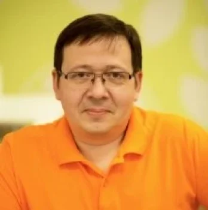
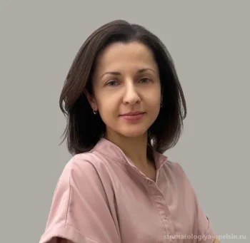
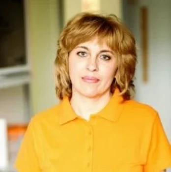
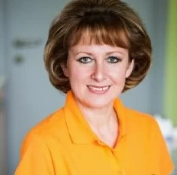
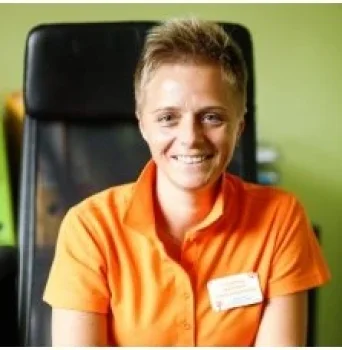
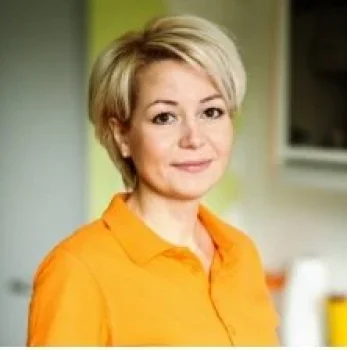
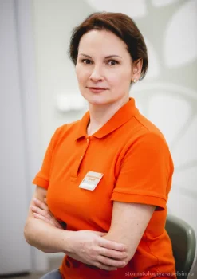
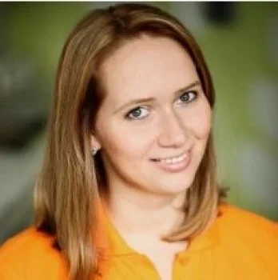

Специалисты клиники
Стоматологи-терапевты, ортодонты и стоматолог-хирург.
Записаться к выбранному врачу можно через администратора.

Мухин Вячеслав Викторович
Стоматолог-терапевт
Образование и опыт
- Стоматолог, стоматолог-терапевт. Высшая категория. Стаж в годах не указан.
- Образование — Московский государственный медико-стоматологический университет им. Евдокимова, стоматология, 1999.

Киселева Алина Владимировна
Стоматолог-ортодонт
Образование и опыт
- Ортодонт, стоматолог. Стаж более 12 лет по профилю.
- В профиле указаны восстановление зубного ряда, диагностика взаимоотношения зубных рядов, коррекция прикуса у взрослых и детей, LM-активатор, брекеты, пластинки, трейнеры и функциональные аппараты, коррекция начальных изменений окклюзии.
- Образование — Нижегородская государственная медицинская академия (2005), интернатура в МЛПУ «Стомат.поликлиника» (2006), ординатура по ортодонтии в Московском государственном медико-стоматологическом университете (2008).
- Курсы 2023 года — мини-имплантаты в ортодонтии, стоматология дыхательных путей, биомеханика мини-имплантов, International MEAW Course (Ташкент), вертикальные аномалии прикуса, Next Level of Orthodontics, вертикальный подход к планированию и коррекции сагиттальных аномалий. Остальные перечисленные мероприятия проходили в Москве.
- Курсы 2024 года — ортокраниодонтия у подростков и взрослых, VieSid Basic Curriculum (Вена), дентальная фотография, многопетлевая дуга, сплинты при дисфункции ВНЧС, физико-математические аспекты ортодонтии. Остальные перечисленные мероприятия проходили в Москве.

Семагина Ирина Алексеевна
Стоматолог-терапевт
Образование и опыт
- Стоматолог, стоматолог-терапевт. Стаж более 15 лет по профилю.
- В профиле упомянуты научные конференции, профильные семинары и повышение квалификации.

Шишкина Светлана Викторовна
Стоматолог-терапевт
Образование и опыт
- Стоматолог, стоматолог-терапевт. Медицинский стаж более 20 лет по профилю.
- Образование и категория не указаны.

Чукарина Светлана Александровна
Главный врач, стоматолог-хирург
Образование и опыт
- Главный врач, стоматолог. В отдельном профиле дополнительно указано «стоматолог-хирург». Высшая категория. Стаж в годах не указан.
- Образование — Московский государственный медико-стоматологический университет им. Евдокимова, стоматология, 2003.

Баева Анна Александровна
Стоматолог-терапевт
Образование и опыт
- Стоматолог, стоматолог-терапевт. Медицинский стаж более 14 лет по профилю.
- Образование — Московский государственный медико-стоматологический университет им. Евдокимова, стоматология (2003), терапевтическая стоматология (2015).

Воробьёва Галина Валерьевна
Стоматолог-терапевт
Образование и опыт
- Стоматолог, стоматолог-терапевт. Категория и стаж числом не указаны.
- Образование — стоматологический факультет Тверской государственной медицинской академии (1993–1998), интернатура по стоматологии там же (1998–2000).
- Подтверждение сертификата — ФУВ МОНИКИ (2006 и 2011, в профиле указана стоматология общей практики), Институт повышения квалификации ФМБА (2016, стоматология общей практики).
- Опыт по профилю — ООО «Дентел», Зеленоград (03–12.2001), ООО «МЦЗ АТН-СВ», Москва (02.2003–06.2017), клиника SHIFA, Москва (08.2017–08.2018), ООО «МЦЗ АТН-СВ», Мытищи (с августа 2018 года по данным профиля).

Звездина Юлия Дмитриевна
Стоматолог-ортодонт
Образование и опыт
- Ортодонт, стоматолог. Высшая категория. Стаж в годах не указан.
- Направления в профиле — LM-активатор, ортодонтические пластинки и функциональные ортодонтические аппараты.
- Образование — Московский государственный медико-стоматологический университет им. Евдокимова, стоматология (2009), стоматология общей практики (2010), ортодонтия (2012, 2016).
- Курсы 2012 года — позиционирование вестибулярной аппаратуры и работа с перекрёстной окклюзией.
- Курсы 2013 года — вне- и внутриротовые приспособления в эджуайз-технике, MEAW и коррекция открытого прикуса, комплексное планирование и патология ВНЧС, биомеханика.
- Курсы 2014 года — показания к удалению в пограничных случаях при Damon, расширенный курс Damon с этапами лечения, эстетической коррекцией и непрямой фиксацией, коррекция прикуса класса II с Forsus, современные методы ортодонтии.
- Курсы 2015 года — дистальная окклюзия и дисгнатии II класса, капы 3D Smile, 3D-визуализация в стоматологии, челюстно-лицевой хирургии и оториноларингологии.
- Курсы 2016 года — Incognito Lingual Master Class 1–2, функциональная окклюзия.